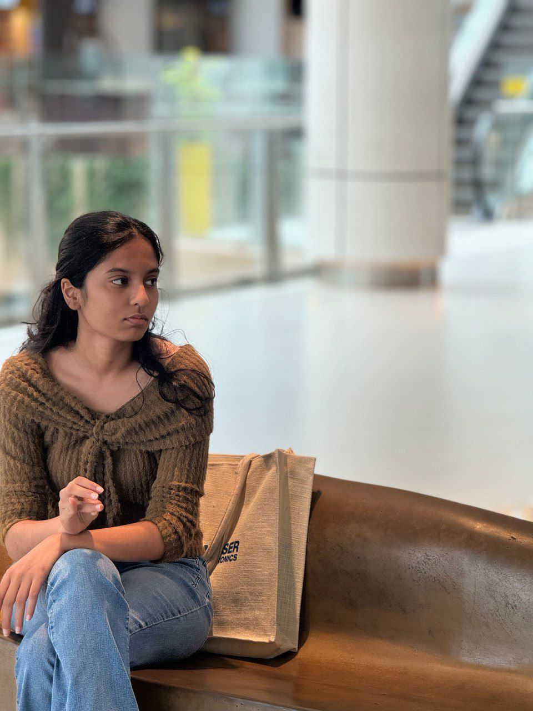
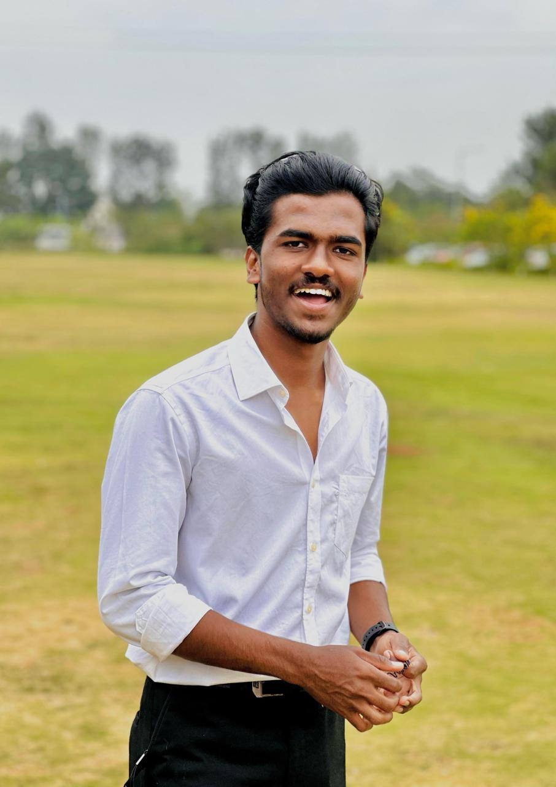

Sreeharsh U






As CTO at Psyc, I've led innovative tech development with a highly motivated team. The collaborative environment has fostered both personal and professional growth, turning challenges into learning opportunities. This experience has been truly exceptional, expanding my skills and pushing me to new heights.
Abhin Vaidya
Thrilled to join PSYC in its early stages as the AI/ML or software or technology Lead. Eager to share my knowledge, learn continuously, and drive impactful results for the company's success.
Deepak T B
I’m an AI enthusiast with a deep passion for exploring new innovations in technology. Now that I’ve joined the PSYC team in its early stages, I’m excited to help pioneer solutions that push the boundaries of what’s possible. I’m committed to leveraging AI to drive impactful and sustainable advancements, and I’m looking forward to shaping the future of our industry.
Riddhi Rai
My time at PSYC has been excellent experience.Working with a self-motivated team like this one has been incredibly inspiring, driving me to push my limits and achieve more.The environment here is defined by cooperation where every challenge has served as a chance to learn and develop.
Solomon D'Costa
At Psyc, I've led groundbreaking design and attachment mechanisms. The team's dedication has inspired me to enhance my skills and reach new heights. Our collaborative culture transforms challenges into growth opportunities, fostering significant professional and personal development. This experience has been truly exceptional.
Karthik B
At PSYC Aerospace and Defense, I collaborate closely with Karnataka's Forest Department, attending elephant-human conflicts and captures. This hands-on field research informs our tranquilizing dart drone development, ensuring our technology addresses real-world challenges in wildlife management. Our goal is to enhance elephant relocation safety and efficiency, benefiting both conservation and human communities
Brunda MN
Being part of this team has been a transformative experience, pushing me to reach new heights in both my career and personal growth. The culture here is one of collaboration and innovation, where every idea is valued, and every challenge is an opportunity to learn.
Bhavana RG